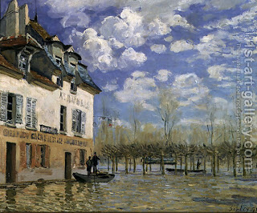

Bava Kamma 30 - Pouring Water out in the Street
If one puts out straw or stubble into the public domain to be converted into manure by people and animals stepping on it, and another person is damaged by them, the owner of the straw is liable for damages, and whoever is the first to take the straw acquires it - but we do not announce this last law in public.
Even in those cases where it is allowed to put hazardous objects out, such as pouring water out in the street in a rainy season, if a passerby is damaged by it, the one who poured out the water is liable.